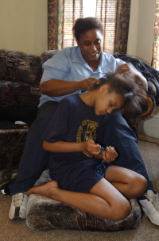

- Title Page
- Introduction
- No Child Left Behind
- School Choice in Chicago
- A Beat Reporter Goes Deeper
- Going In Blind
- First Day, First Twist
- Beginnings of a Theme
- Behind the Scenes
- First Month at Stockton
- Obstacles
- From Stockton to Attucks
- Salvaging a Story
- The Projects Team
- Third Chapter?
- How to tell her?
Behind the Scenes
The following weekend, Banchero decided to visit the Carwells at home to observe their lives outside the classroom. “I wanted to see the context for what was happening in the classroom. How did homework get done? What do they do on weekends?” says Banchero. “I thought something good was happening.”
Banchero arrived on Saturday afternoon at the house Yolanda Carwell shared with her mother, sister, and nephew. The Carwells lived on Chicago’s South Side in Englewood, a predominantly African-American neighborhood infamous for its high crime rate. Banchero knew that Rayola’s old school, Holmes Elementary, was just around the corner on a dangerous street. Classrooms at Holmes were overcrowded, teachers weren’t always qualified, and less than 30 percent of Holmes’ students passed their annual state exams. The neighborhood and the school were a far cry from ethnically diverse and academically fast-paced Stockton. But in contrast to the trash-strewn street outside, Banchero found the Carwell house “beautiful, sparkling clean; it smelled like Pine-Sol.” She adds:
My first impression was there’s a lot of love in this family. They may have problems, but this mother loves her kids and those kids were very respectful of the authority of their mother.

Rayola and her mother, Yolanda, at home.
©
Chicago Tribune
Banchero spent the day with the Carwells, trying to experience life as they lived it. “I always had my notebook with me, but I would just sort of hang out,” Banchero says. She tried to meld into their weekend, but ultimately felt awkward. “It’s just sort of weird hanging out at somebody’s house and watching them do nothing,” Banchero says. “They thought they needed to keep me entertained instead of just doing what they would regularly do, which is just lay on their bed and watch TV.” This would be the first of many visits, however, and Banchero soon found that the family was able to relax around her.
On later visits, Banchero began to notice other details. For one thing, Yolanda Carwell’s room was frequently “a disaster area.” Yet Carwell spent a disproportionate amount of time there. While the children played, watched cartoons or even fought, Carwell was largely absent, shut in her room, talking on the phone or watching TV. Rayola, Banchero observed, was usually the one who mopped the floors and tidied up. “There was a dichotomy [there],” Banchero says. She was starting to wonder if Carwell’s lack of engagement lay behind Rayola’s absenteeism at her old school. After all, it was just around the corner—transportation could not have been a problem.